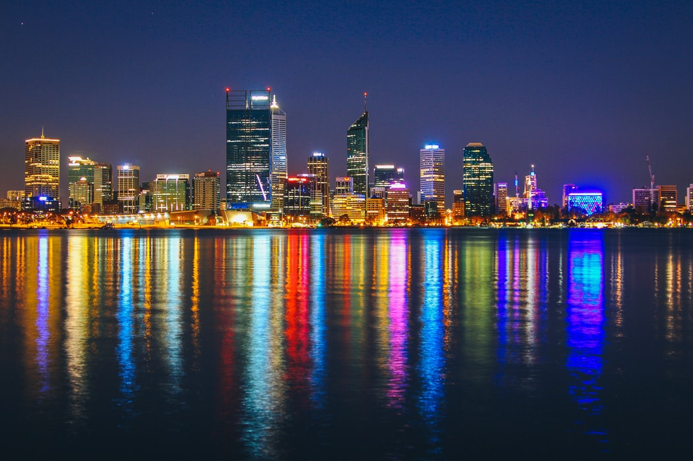

Journey to Perth
Australia, I'm coming. That what I said 2 years ago when I got the visa to do work and travel in Australia. Australia is another journey. Australia is not about Kanggoro, it is not about the sea, it is more about the people and culture.
Among the cities in Australia, I like Perth the most. The reason I loved it is because it is not too big, but also not too small. It has onle 1,2 Millions people on the town, close to the sea, friendly people, and a good food. It has a good view and nice indian restaurant called Annalaksmi. Annalaksmi is a free restaurant made by Indian Millionaire to help backpacker or people near Perth.
The other reaons I like perth is that the sun. Perth receives moderate though highly seasonal, winter based rainfall. Summers are generally hot and dry, lasting from December to March, with February generally being the hottest month of the year. Winters are cool and wet, giving Perth a hot-summer Mediterranean climate (Köppen climate classification Csa). Perth has an average of 8.8 hours of sunshine per day, which equates to around 3200 hours of annual sunshine, and 138.7 clear days annually, making it the sunniest capital city in Australia.
Summers are dry but not completely devoid of rain, with sporadic rainfall in the form of short-lived thunderstorms, cold fronts and on occasions decaying tropical cyclones from Western Australia's north-west, which can bring heavy rain. Winters see significant rainfall as frontal systems move across the region, interspersed with clear and sunny days. The highest temperature recorded in Perth was 46.2 °C (115.2 °F) on 23 February 1991, although Perth Airport recorded 46.7 °C (116.1 °F) on the same day. On most summer afternoons a sea breeze, known locally as the "Fremantle Doctor", blows from the southwest, providing relief from the hot north-easterly winds. Temperatures often fall below 30 °C (86 °F) a few hours after the arrival of the wind change.In the summer, the 3 pm dewpoint averages at around 12 °C (54 °F).